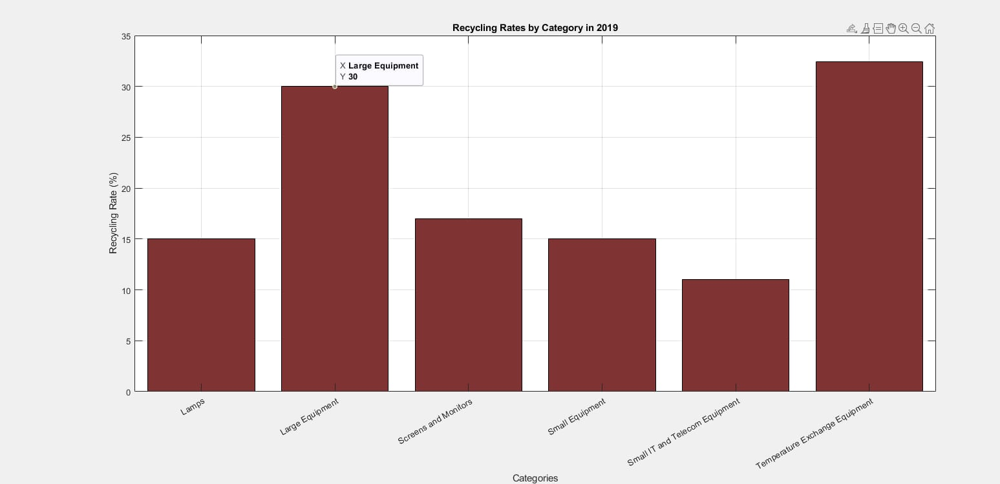
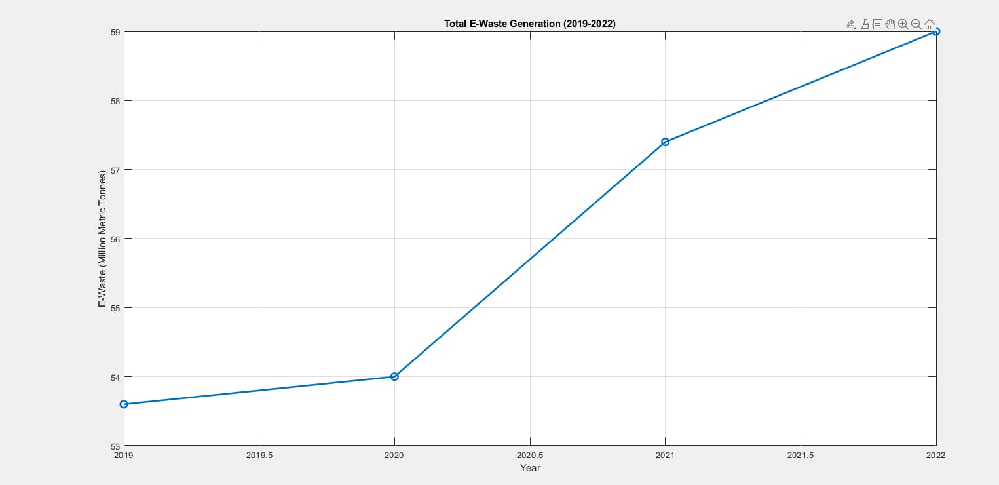
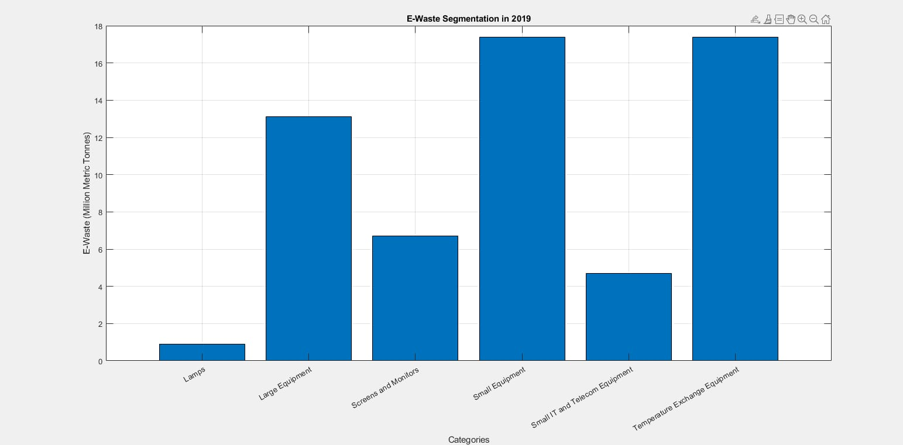
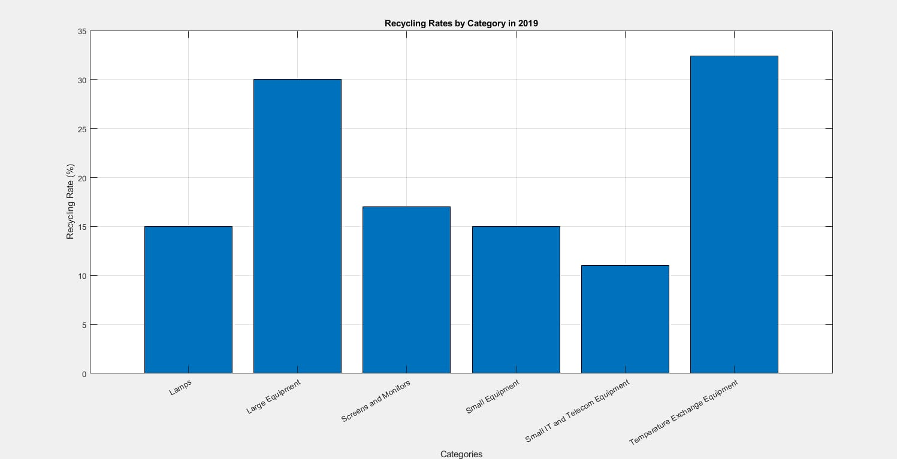

This graph illustrates the recycling rates across different categories in 2019. Each category, such as Lamps, Large Equipment, and others, is shown with its corresponding recycling rate percentage.

The graph shows a steady increase in e-waste generation from 2019 to 2022, with a significant rise in 2021 and 2022, indicating a growing environmental challenge.

This graph shows the segmentation of e-waste by category in 2019, measured in million metric tonnes. The categories match those from the recycling rates, with amounts reflecting the overall e-waste generated.

This is another representation of the recycling rates with values adjusted for accuracy based on the images.